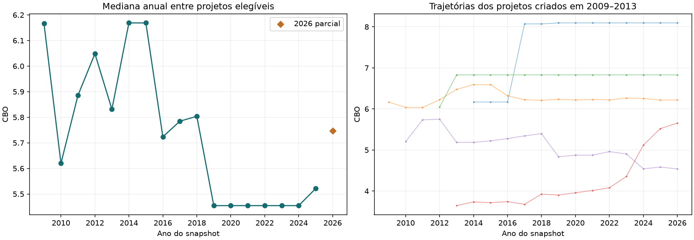
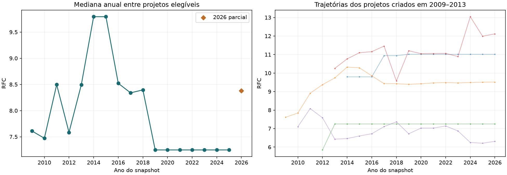
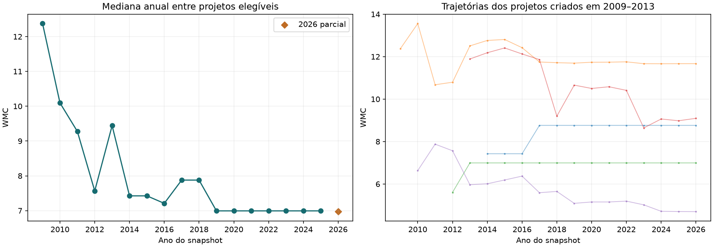
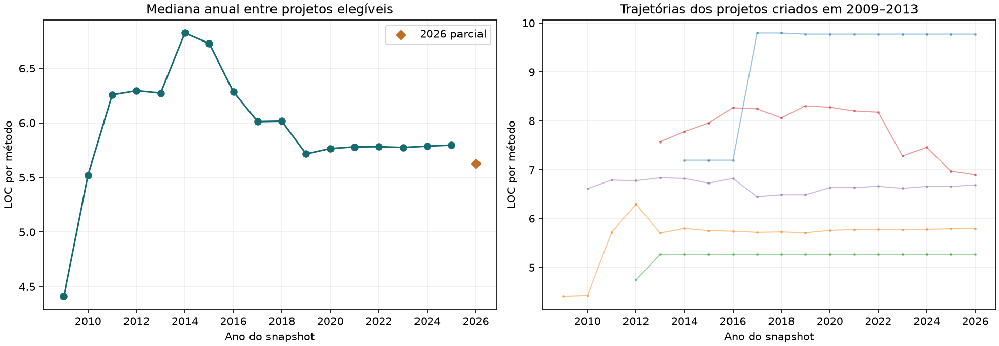
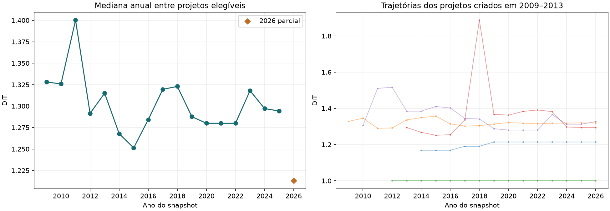
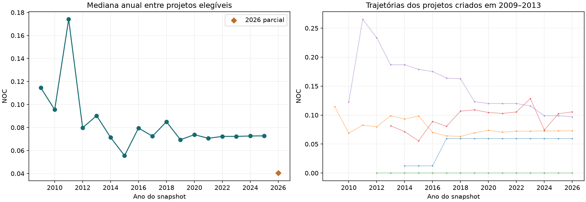
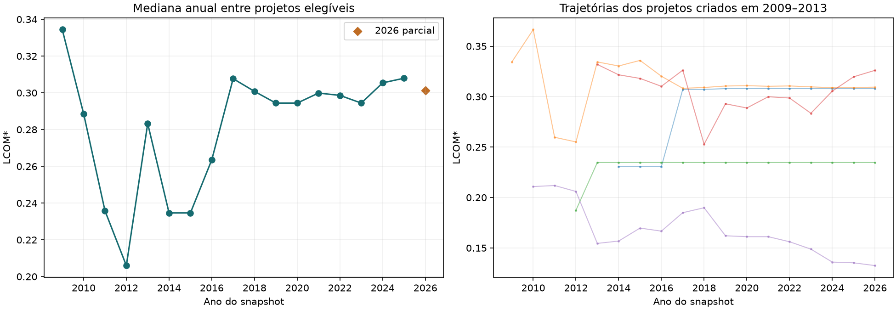

Evolução histórica de projetos Spring
Versões anuais, transição para Spring Boot e evidências observáveis de IA.
Este relatório é descritivo. A criação define o sorteio; o ano do snapshot define a época da medição. Mudanças observadas não demonstram causalidade. Ausência de evidência de IA não comprova ausência de uso.
População antes da clonagem
| Coorte de criação | População | Excluídos | Candidatos | Arquivados mantidos | Atividade antiga mantida | Data desconhecida mantida |
|---|
| E1 | 141 | 25 | 116 | 14 | 54 | 0 |
| E2 | 8426 | 2590 | 5836 | 369 | 5100 | 0 |
| E3 | 35774 | 9955 | 25819 | 985 | 21989 | 0 |
| E4 | 73279 | 20418 | 52861 | 670 | 13766 | 3 |
| fora_das_coortes | 1 | 0 | 1 | 0 | 0 | 0 |
| Total | 117621 | 32988 | 84633 | 2038 | 40909 | 3 |
Candidatos passaram pelos filtros de metadados. Apenas datas de criação válidas dentro das quatro coortes e até o corte participam do sorteio.
1. Cobertura da coleta
| Coorte de criação | Sorteados | Processados | Projetos com versões | Snapshots | Projetos elegíveis | Snapshots elegíveis |
|---|
| E1 | 116 | 10 | 10 | 155 | 5 | 77 |
| E2 | 500 | 10 | 10 | 101 | 3 | 31 |
| E3 | 500 | 10 | 10 | 75 | 1 | 8 |
| E4 | 500 | 10 | 10 | 16 | 3 | 3 |
| Total | 1616 | 40 | 40 | 347 | 12 | 119 |
Épocas com medições elegíveis em anos completos: 4 de 4. O período parcial de 2026 é informado separadamente. Observações anuais com SHA repetido continuam identificadas nas tabelas.
Uma versão só participa da comparação principal com Spring confirmado em declarações de produção, pelo menos 2.000 linhas Java e extração CK completa. Versões menores, código do próprio framework e falhas permanecem nas tabelas de diagnóstico. O total de projetos não é a soma das épocas de medição: o mesmo projeto pode atravessar várias épocas.
Estados registrados: missing_snapshot: 373, no_java: 1, ok: 346.
2. O que medimos
CBO: dependências gerais entre classes. RFC: chamadas distintas contabilizadas pelo CK. WMC: complexidade dos métodos por classe, sem medir tempo de execução. LOC por método: tamanho dos métodos. DIT e NOC: profundidade e descendentes na herança. LCOM*: falta de coesão na variante normalizada do CK. Nenhuma dessas medidas isoladamente constitui uma nota de maturidade.
3. Comparações por época de medição
Cada valor é a mediana entre projetos, depois de obter a mediana dos snapshots de cada projeto na época. Assim, projetos com mais versões não recebem mais peso. Projetos cuja evidência muda dentro da época aparecem em “transicao_observada”, sem serem contados simultaneamente nos dois grupos. 2026 é parcial e fica separado.
Os grupos consideram evidências já observadas no histórico até cada corte. Um projeto pode conservar esse rótulo após remover um arquivo de configuração. A tabela de medições separa sinais presentes na versão (ia_present) e evidências históricas (ia_history); nenhum deles prova uso contínuo.
| Época do código | Evidência de IA | Projetos | Snapshots | CBO | RFC | WMC | LOC por método | DIT | NOC | LCOM* |
|---|
| E1 | todos | 4 | 12 | 5,818 | 8,127 | 9,495 | 6,246 | 1,311 | 0,082 | 0,271 |
| E1 | com_evidencia | 0 | 0 | — | — | — | — | — | — | — |
| E1 | sem_evidencia_detectada | 4 | 12 | 5,818 | 8,127 | 9,495 | 6,246 | 1,311 | 0,082 | 0,271 |
| E1 | transicao_observada | 0 | 0 | — | — | — | — | — | — | — |
| E2 | todos | 8 | 24 | 5,709 | 8,521 | 7,209 | 6,026 | 1,296 | 0,079 | 0,306 |
| E2 | com_evidencia | 0 | 0 | — | — | — | — | — | — | — |
| E2 | sem_evidencia_detectada | 8 | 24 | 5,709 | 8,521 | 7,209 | 6,026 | 1,296 | 0,079 | 0,306 |
| E2 | transicao_observada | 0 | 0 | — | — | — | — | — | — | — |
| E3 | todos | 9 | 35 | 5,455 | 7,248 | 6,993 | 5,748 | 1,284 | 0,070 | 0,294 |
| E3 | com_evidencia | 0 | 0 | — | — | — | — | — | — | — |
| E3 | sem_evidencia_detectada | 9 | 35 | 5,455 | 7,248 | 6,993 | 5,748 | 1,284 | 0,070 | 0,294 |
| E3 | transicao_observada | 0 | 0 | — | — | — | — | — | — | — |
| E4 | todos | 9 | 36 | 5,455 | 7,248 | 6,993 | 5,784 | 1,312 | 0,072 | 0,302 |
| E4 | com_evidencia | 0 | 0 | — | — | — | — | — | — | — |
| E4 | sem_evidencia_detectada | 9 | 36 | 5,455 | 7,248 | 6,993 | 5,784 | 1,312 | 0,072 | 0,302 |
| E4 | transicao_observada | 0 | 0 | — | — | — | — | — | — | — |
| 2026_partial | todos | 12 | 12 | 5,747 | 8,380 | 6,972 | 5,626 | 1,213 | 0,040 | 0,301 |
| 2026_partial | com_evidencia | 3 | 3 | 5,654 | 9,927 | 4,699 | 6,765 | 1,294 | 0,097 | 0,133 |
| 2026_partial | sem_evidencia_detectada | 9 | 9 | 6,219 | 7,248 | 6,993 | 5,385 | 1,128 | 0,021 | 0,308 |
| 2026_partial | transicao_observada | 0 | 0 | — | — | — | — | — | — | — |
4. Antes e depois no mesmo projeto
A comparação usa a última versão anual elegível anterior ao marco e a primeira elegível posterior, entre anos completos. n_a é a quantidade de projetos antes e n_b a quantidade depois: aqui são os mesmos projetos. A diferença apresentada é a mediana das diferenças individuais, que pode diferir da subtração das duas medianas. Um projeto já positivo na primeira observação não demonstra uma transição.
| Marco | Métrica | n_a / antes | n_b / depois | Mediana antes | Mediana depois | Mediana das diferenças |
|---|
| boot | CBO | 2 | 2 | 4,983 | 4,980 | -0,004 |
| boot | RFC | 2 | 2 | 10,051 | 10,097 | 0,046 |
| boot | WMC | 2 | 2 | 12,156 | 11,966 | -0,190 |
| boot | LOC por método | 2 | 2 | 6,660 | 6,752 | 0,092 |
| boot | DIT | 2 | 2 | 1,304 | 1,285 | -0,019 |
| boot | NOC | 2 | 2 | 0,076 | 0,068 | -0,008 |
| boot | LCOM* | 2 | 2 | 0,326 | 0,315 | -0,011 |
| ia | CBO | 0 | 0 | — | — | — |
| ia | RFC | 0 | 0 | — | — | — |
| ia | WMC | 0 | 0 | — | — | — |
| ia | LOC por método | 0 | 0 | — | — | — |
| ia | DIT | 0 | 0 | — | — | — |
| ia | NOC | 0 | 0 | — | — | — |
| ia | LCOM* | 0 | 0 | — | — | — |
Contexto nos mesmos intervalos de calendário: projetos sem presença observada do marco em seu histórico disponível. Cada janela é descrita separadamente; os projetos não são apresentados como controles equivalentes.
| Marco | Ano anterior | Ano posterior | Métrica | Projetos | Mediana das diferenças |
|---|
| boot | 2013 | 2014 | CBO | 2 | 0,000 |
| boot | 2013 | 2014 | DIT | 2 | 0,000 |
| boot | 2013 | 2014 | LCOM* | 2 | 0,001 |
| boot | 2013 | 2014 | LOC por método | 2 | -0,007 |
| boot | 2013 | 2014 | NOC | 2 | 0,000 |
| boot | 2013 | 2014 | RFC | 2 | 0,016 |
| boot | 2013 | 2014 | WMC | 2 | 0,022 |
| boot | 2016 | 2017 | CBO | 2 | 0,033 |
| boot | 2016 | 2017 | DIT | 2 | -0,029 |
| boot | 2016 | 2017 | LCOM* | 2 | 0,009 |
| boot | 2016 | 2017 | LOC por método | 2 | -0,189 |
| boot | 2016 | 2017 | NOC | 2 | -0,006 |
| boot | 2016 | 2017 | RFC | 2 | 0,192 |
| boot | 2016 | 2017 | WMC | 2 | -0,390 |
5. Trajetórias e contexto
As medianas anuais também mudam quando muda a composição dos projetos com dados. As trajetórias individuais e as tabelas por tamanho, framework e coorte ajudam a distinguir essa mudança de composição da evolução do mesmo projeto. Uma queda de uma métrica não significa automaticamente melhoria.







6. Dados e reprodução
Limitações: descoberta por metadados atuais; projetos desaparecidos; migrações ou reescrita de histórico; datas Git que não comprovam publicação real; falhas de parser; dependências sem resolução completa; IA sem vestígios e sinais ambíguos. Evidências de arquivos refletem configuração declarada, sem quantificar código gerado.
Gerado em 2026-10-11T20:20:42.601778+00:00Observação complementar: transições com acompanhamento parcial em 2026
Estes pares não entram na tabela de anos completos. Eles usam a última versão anual elegível anterior ao marco e a primeira versão elegível posterior, quando esta só está disponível no corte parcial de 2026. O tempo de acompanhamento é menor e a comparação não identifica um efeito causal.
| Marco | Métrica | n_a / antes | n_b / parcial | Mediana antes | Mediana parcial | Mediana das diferenças |
|---|
| boot | CBO | 0 | 0 | — | — | — |
| boot | RFC | 0 | 0 | — | — | — |
| boot | WMC | 0 | 0 | — | — | — |
| boot | LOC por método | 0 | 0 | — | — | — |
| boot | DIT | 0 | 0 | — | — | — |
| boot | NOC | 0 | 0 | — | — | — |
| boot | LCOM* | 0 | 0 | — | — | — |
| ia | CBO | 2 | 2 | 5,052 | 5,097 | 0,045 |
| ia | RFC | 2 | 2 | 9,098 | 9,214 | 0,116 |
| ia | WMC | 2 | 2 | 6,842 | 6,897 | 0,055 |
| ia | LOC por método | 2 | 2 | 6,815 | 6,796 | -0,020 |
| ia | DIT | 2 | 2 | 1,303 | 1,310 | 0,007 |
| ia | NOC | 2 | 2 | 0,101 | 0,101 | 0,001 |
| ia | LCOM* | 2 | 2 | 0,227 | 0,229 | 0,002 |
Pares, datas e SHA do acompanhamento parcial